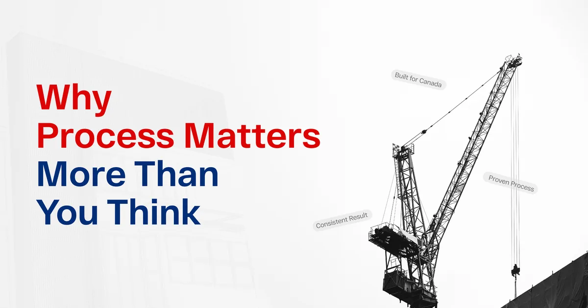
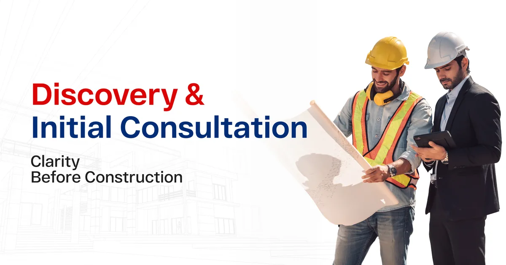
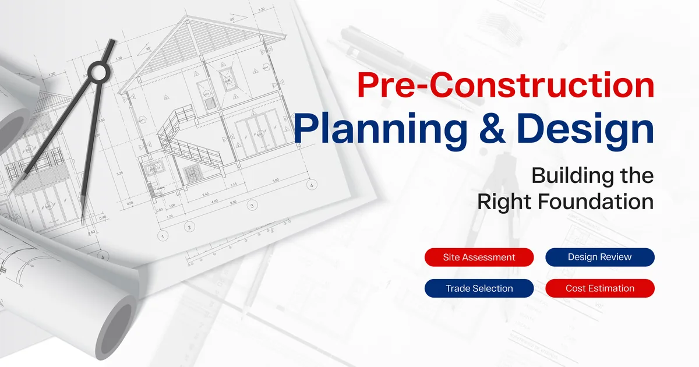
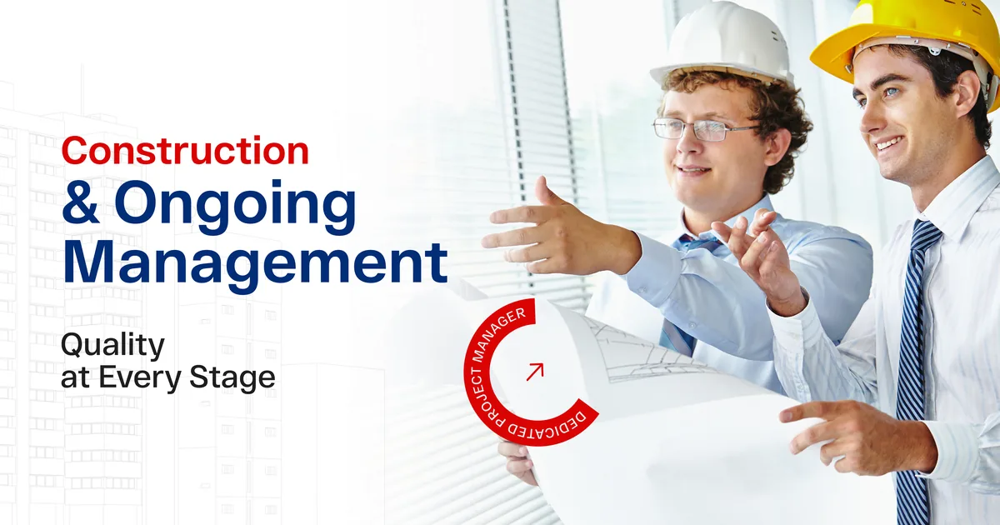
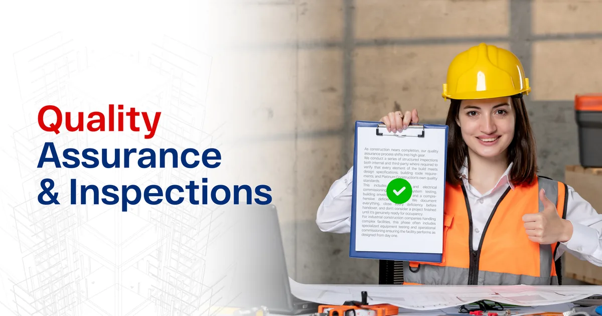
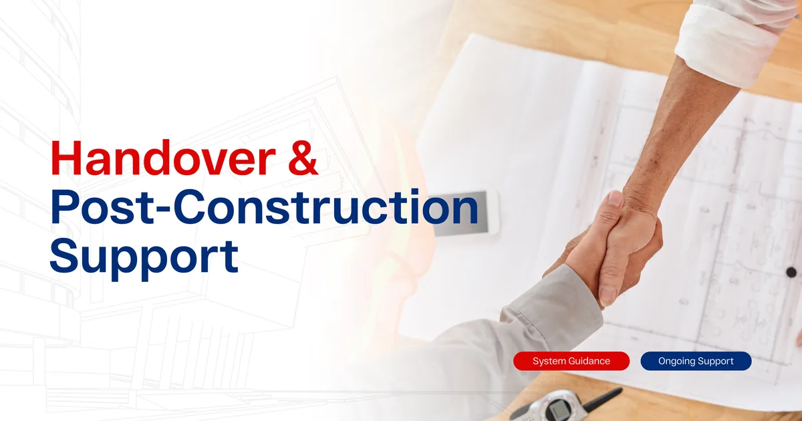
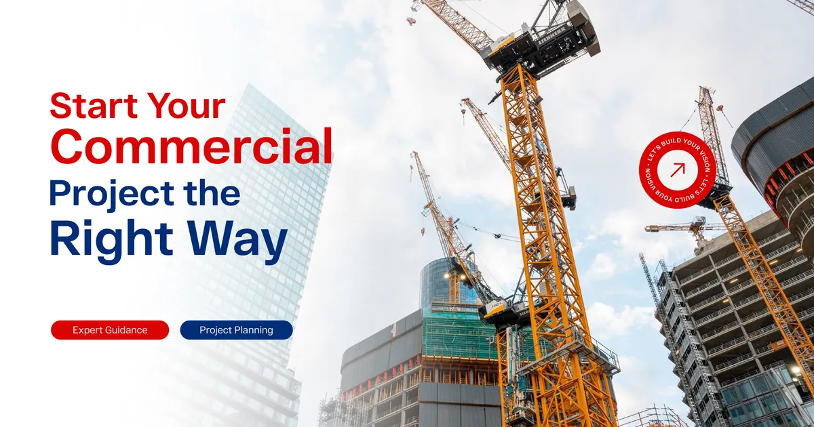

And even if you have been through a commercial build before, you probably know how quickly things can go sideways when a construction company does not have its process together.
That’s exactly why we believe in radical transparency at Platinum Construction. We don’t just tell you we’re a reliable construction company in Canada: we show you, step by step, how we work. Because when you understand our process, you will understand why our projects stay on track, on budget, and on point.

Why Process Matters More Than You Think
A well-run construction process is not just good project management. It’s the thing that protects your investment, your timeline, and your sanity.
Too many Canadian business owners have experienced the frustration of working with commercial builders who wing it: who react to problems instead of preventing them, who communicate in bursts rather than consistently, and who treat your project like just another job on their list.
The best construction companies operate differently. They have a defined, repeatable process that accounts for the unexpected, keeps every stakeholder aligned, and delivers a finished product that meets or exceeds expectations. Every single time.
At Platinum Construction, our process has been refined through years of delivering commercial projects across Canada, from local retail fit-outs to large-scale industrial facilities. Here’s what it looks like.

Phase 1: Discovery & Initial Consultation
Every project starts with a conversation, and we take that conversation seriously. When a new client reaches out to Platinum Construction, we schedule a no-pressure discovery meeting to understand your project at a human level. What are you trying to build? What does success look like for your business? What is your timeline, and what are your budget boundaries?
We ask the right questions upfront because the answers shape every decision that follows. We also walk the site if one has been identified, assess any existing conditions, and start forming a picture of the project’s scope and complexity.
This phase isn’t about selling you anything. It’s about understanding your goals well enough to give you honest, useful guidance. If there are constraints or challenges we can already see, we’ll tell you clearly and directly.
What you get from Phase 1:
- A clear understanding of your project goals and timeline
- Honest initial feedback on feasibility and scope
- A sense of whether Platinum Construction is the right fit for your project

Phase 2: Pre-Construction Planning & Design
This is where the real groundwork gets laid, and it is the phase that most separates great commercial construction companies from average ones.
Pre-construction is where we invest time and expertise upfront to prevent problems downstream. We work with your architect or designer (or connect you with trusted partners if needed) to develop construction-ready drawings, specifications, and a detailed cost estimate.
We also manage the full permitting process during this phase. Navigating municipal approvals, zoning requirements, and provincial building codes across Canada requires genuine local knowledge, and as an experienced local construction company operating across multiple Canadian regions, we handle this efficiently so your project doesn’t sit in a queue waiting for paperwork.
| Pre-construction activity | Purpose |
|---|---|
| Site assessment & survey | Identify ground conditions, access constraints, utility locations |
| Design development & review | Ensure plans are buildable, code-compliant, and within budget |
| Detailed cost estimation | Provide an accurate, itemized budget with no hidden surprises |
| Permit applications & approvals | Secure all required municipal and provincial approvals |
| Subcontractor pre-qualification | Identify and vet the right trades for your project type |
| Project schedule development | Build a realistic timeline with clear milestones and dependencies |
Skipping or rushing this phase is one of the most common reasons commercial projects go over budget or over schedule. At Platinum Construction, we protect every project by doing this work properly from the start.
Phase 3: Procurement & Mobilization
Once the plans are approved and permits are in hand, we move into procurement and site mobilization: the transition from planning to building.
During this phase, we finalize subcontractor agreements, order long-lead materials and equipment, and prepare the site for construction. Careful procurement planning is critical in Canada’s construction environment, where supply chains and material lead times can vary significantly by region and season.
We also establish site logistics during mobilization: staging areas, hoarding, access routes, safety systems, and site office setup. For projects in active commercial areas of cities like Toronto, Vancouver, or Calgary, thoughtful site logistics can make the difference between a smooth build and a daily headache for neighbouring businesses.
Our project manager is fully engaged during this phase, building the communication rhythm that will carry through the entire construction period: weekly progress reports, regular site meetings, and clear protocols for decision-making and change management.

Phase 4: Construction & Ongoing Management
This is where the visible work happens, and where our process really earns its keep.
Construction on a commercial project involves dozens of moving parts: multiple trades working in sequence and in parallel, material deliveries to coordinate, inspections to schedule, and quality standards to uphold at every stage. Managing all of that well requires experience, discipline, and genuine accountability.
At Platinum Construction, every commercial build is run by a dedicated project manager who owns the schedule and the outcome. They’re on site regularly, they know every trade by name, and they’re the person who calls you with an update before you have to call them.
Our construction management approach covers:
- Schedule management. We track progress against the baseline schedule daily and identify any risks to the timeline early enough to act on them. If something needs to shift, we tell you immediately and present a recovery plan.
- Quality control. We conduct regular quality inspections at every stage of the build, from foundation and framing through to mechanical systems and finishing work. Issues caught early are issues that don’t become expensive problems later.
- Budget tracking. We monitor costs in real time against the approved budget, flagging any variances and managing change orders through a transparent approval process. No surprises on your final invoice.
- Safety management. Our safety programs meet or exceed provincial requirements across every Canadian jurisdiction we operate in, whether we’re building in Ontario, British Columbia, Alberta, or Atlantic Canada.

Phase 5: Quality Assurance & Inspections
As construction nears completion, our quality assurance process shifts into high gear.
We conduct a series of structured inspections, both internal and third-party where required, to verify that every element of the build meets design specifications, building code requirements, and Platinum Construction’s own quality standards.
This includes mechanical and electrical commissioning, life safety system testing, building envelope inspections, and a comprehensive deficiency review. We document everything, close every deficiency before handover, and don’t consider a project finished until it’s genuinely ready for occupancy.
For industrial construction companies handling complex facilities, this phase often includes specialized equipment testing and operational commissioning, ensuring the facility performs as designed from day one.

Phase 6: Project Handover & Post-Construction Support
Handover isn’t the end of our relationship with a client: it is the beginning of a new chapter.
When we hand over a completed commercial project, we provide a comprehensive package that includes as-built drawings, equipment manuals, warranty documentation, and a full deficiency resolution log. We walk through the space with you, explain all systems, and make sure your team knows exactly what they’ve inherited.
| Handover package contents | Details |
|---|---|
| As-built drawings | Updated plans reflecting actual construction |
| Equipment & systems manuals | Operating guides for all installed systems |
| Warranty documentation | Workmanship warranty and manufacturer warranties |
| Permit & inspection records | Full compliance documentation for your files |
| Deficiency resolution log | Confirmation that all identified issues were resolved |
| Maintenance recommendations | Guidance on ongoing care to protect your investment |
After handover, Platinum Construction remains available for warranty support, building questions, and future project needs. Many of our commercial clients come back to us for expansions, renovations, and new builds because they’ve seen firsthand how we work.
Serving Commercial Clients Across Canada
Platinum Construction’s commercial construction process has been proven across projects in Ontario, British Columbia, Alberta, Saskatchewan, Manitoba, and Atlantic Canada. From fast-paced urban commercial builds in Vancouver and Toronto to industrial facility projects in Calgary and Edmonton, our process travels with us, delivering the same standard of quality and accountability wherever we build.
As a trusted building construction company with genuine local roots across Canada, we combine the regional knowledge of a local builder with the process discipline and resource depth of an experienced national contractor.

Start Your Commercial Project the Right Way
A great commercial build starts with a great process, and a team that follows it every step of the way.
If you are planning a commercial construction project in Canada and want to work with a company that’s as organized as it is skilled, Platinum Construction is ready to talk.
Let’s walk through your project together and show you exactly what our process can do for your build.